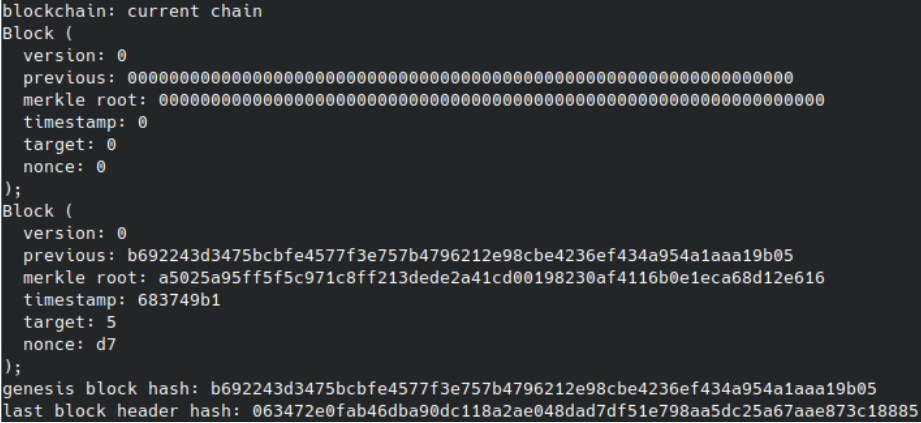

Proof-of-Work Example
Overview
The pow.cc example demonstrates the complete functionality of the blockchain system, showcasing how cryptographic components interact to form a working proof-of-work chain. It simulates the full lifecycle from transaction creation to mining and chain extension.
Execution Flow
Initialize Wallet and Transactions
A new wallet is created, generating a fresh Schnorr key pair.
Five transaction files (t1.txn through t5.txn) are loaded.
Each file’s content is wrapped into a Transaction object and signed by the wallet.
The result is a list of signed transactions ready for submission.
Submit Transactions to Blockchain
The blockchain module verifies each transaction’s Schnorr signature.
Valid transactions are accepted into the transaction pool.
Output confirms whether each transaction was accepted or rejected.
Create a Miner
A Miner instance is initialized.
It will later be responsible for gathering verified transactions and mining a new block.
Mining a Block
The miner pulls pending transactions (all five signed earlier).
A candidate block is assembled, and its Merkle root is computed.
The miner begins a proof-of-work loop: trying different nonce values and hashing the block header.
The difficulty target (e.g. 5 leading zero bits in hash) is enforced during this loop.
Block Found
Once a nonce is found that meets the difficulty condition, a valid block is formed.
The block is appended to the blockchain.
Its transactions are considered confirmed and removed from the pool.
Output the Blockchain State
The program prints the blockchain contents: - Genesis Block (Block 0): Initialized with all-zero header. - Block 1: Newly mined block with header fields (version, previous hash, Merkle root, timestamp, target, nonce).
The link between Block 1 and the genesis block is confirmed by matching the previous-hash field.
Verify Proof-of-Work
The hash of the block header is displayed.
The binary representation of the first byte is checked to ensure it satisfies the required number of leading zero bits.
This confirms that the block meets the difficulty threshold and is valid.
Console output
The first part of the output is transaction logs and shows which wallets were created and their activity (sent transactions, blockchain-verified transactions, etc).

The second part of the output shows the structure of the blockchain after the successful addition of a new block, including the genesis block.
Summary
The example highlights full system integration:
A Wallet creates and signs transactions.
The Blockchain validates them and organizes block data.
A Miner assembles transactions, computes Merkle roots, and mines new blocks via a proof-of-work algorithm.
The output serves as a live trace confirming correct operation of signature validation, hashing, Merkle tree generation, and PoW enforcement.
This file is especially useful for understanding how modular components (signatures, hashing, Merkle trees, mining) cooperate in a functioning blockchain.